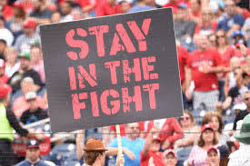

Fans and the Playoff Race
Heart pounding? Not getting enough sleep? You're not alone--- the data suggests this is the common fan experience.
We explore FitBit data from September 1-November 15, 2019.
For baseball fans, a pennant race can be stressful, delightful, excruciating and exhilirating. It was no exception for fans of the 2019 Washington Nationals, whose 19-31 season start didn't inspire thoughts of October baseball among even the most optimistic of fans. Mounting injuries, repeated blown leads, and a historically bad bullpen had analysts and fans writing the season off by mid-May (and had many Yankees fans dreaming of ace pitcher Max Scherzer in pinstripes).
By May 23rd, the Nationals' odds for a playoff appearance were less than 3%, according to The Washington Post.
But the team launched an epic turnaround, winning 81 of the next 112 games, a blistering pace that would have resulted in the best record in 2019 baseball if it hadn't been for the historically bad start. The remainder of the season, and particularly late August through September, was punctuated by late rallies, stellar pitching performances, defensive heroics, and solid whole-team wins. It would not be enough to win the National League East title-- the Nationals never held first place all season-- but it was good enough to secure a Wild Card berth.

This was an unprecedented stretch run. Every game was a thriller. And the fans were in for a wild experience. To find out just how wild, we took FitBit data from fan volunteers and analyzed heart rate and sleeping patterns..
Heart pounding? Not getting enough sleep? You're not alone--- the data suggests this is the common fan experience.
We explore FitBit data from September 1-November 15, 2019.
Held on October 1, 2019, the Nationals' 4-3 victory over the Milwaukee Brewers is considered by many fans to be the most thrilling game in Nationals history.

On October 30, 2019, the Nationals staged one last late-innings rally to beat the Houston Astros 6-2 and secure their franchise's first World Series championship.